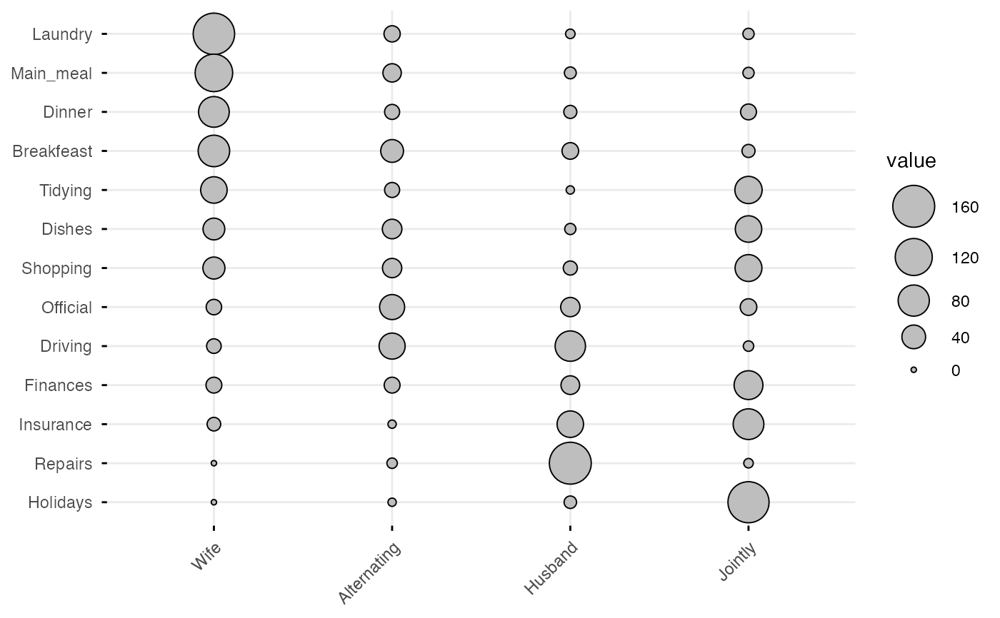
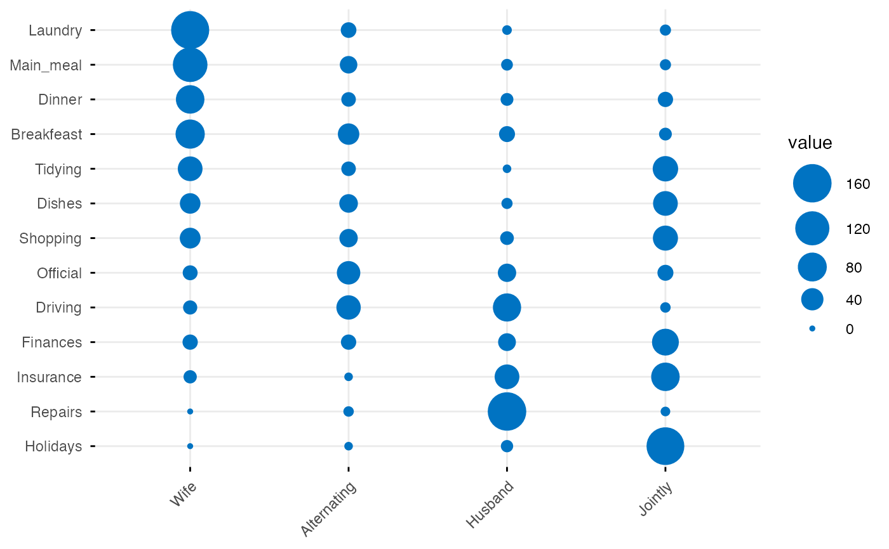
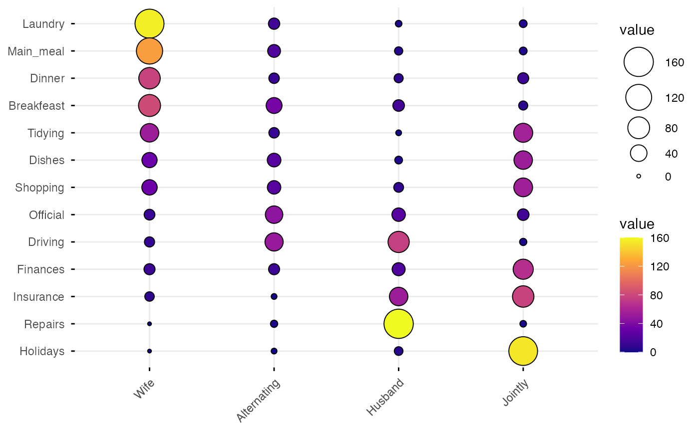
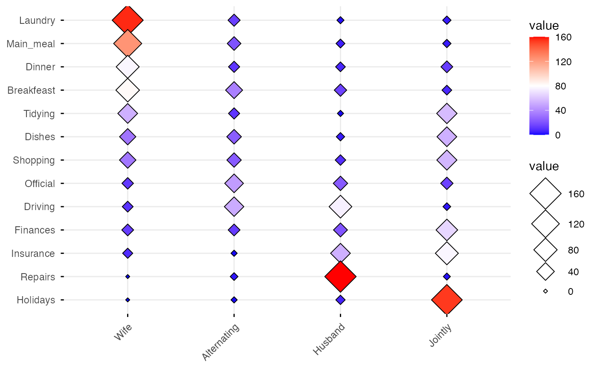
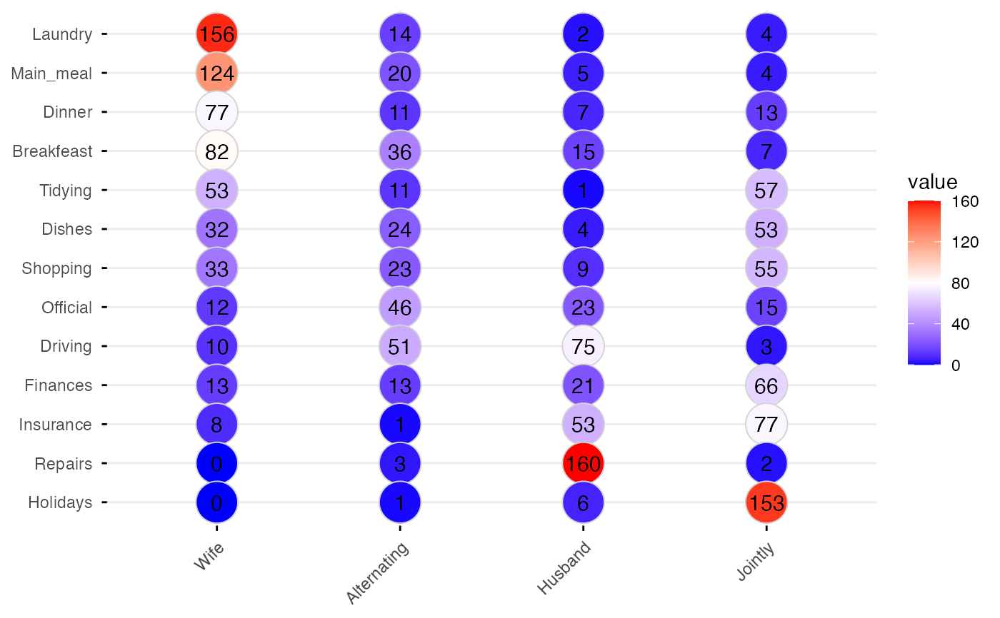
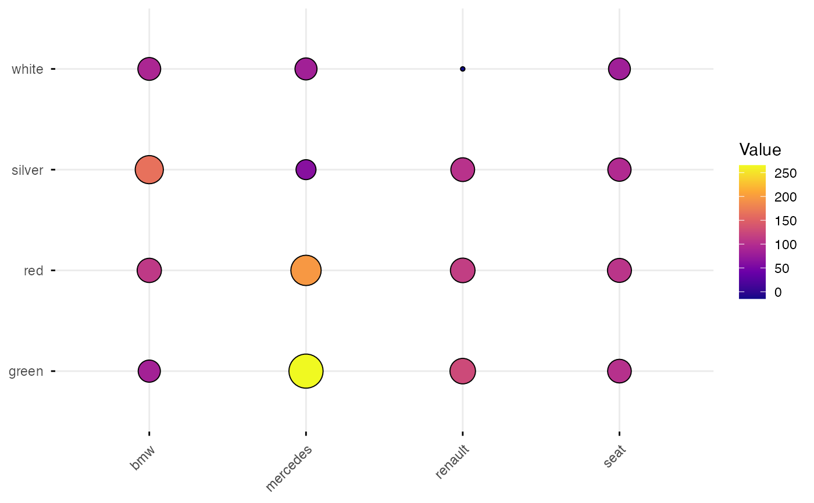
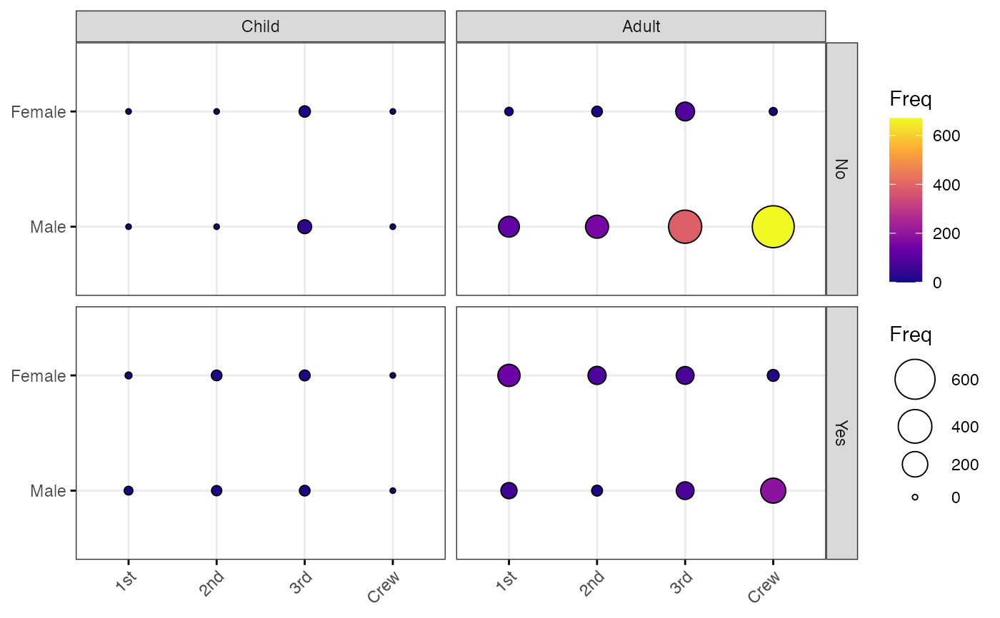
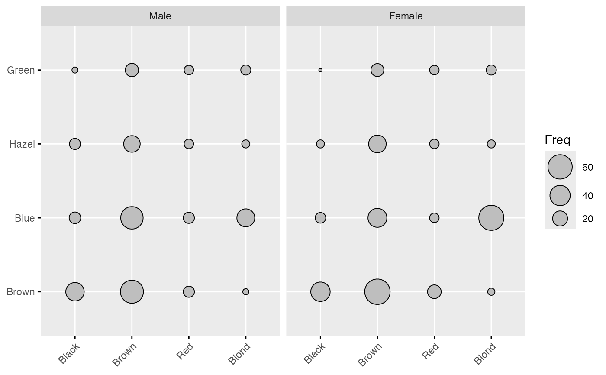

Plot a graphical matrix where each cell contains a dot whose size reflects the relative magnitude of the corresponding component. Useful to visualize contingency table formed by two categorical variables.
Usage
ggballoonplot(
data,
x = NULL,
y = NULL,
size = "value",
facet.by = NULL,
size.range = c(1, 10),
shape = 21,
color = "black",
fill = "gray",
show.label = FALSE,
font.label = list(size = 12, color = "black"),
rotate.x.text = TRUE,
ggtheme = theme_minimal(),
...
)Arguments
- data
a data frame. Can be:
a standard contingency table formed by two categorical variables: a data frame with row names and column names. The categories of the first variable are columns and the categories of the second variable are rows.
a streched contingency table: a data frame containing at least three columns corresponding, respectively, to (1) the categories of the first variable, (2) the categories of the second varible, (3) the frequency value. In this case, you should specify the argument x and y in the function
ggballoonplot()
.
- x, y
the column names specifying, respectively, the first and the second variable forming the contingency table. Required only when the data is a stretched contingency table.
- size
point size. By default, the points size reflects the relative magnitude of the value of the corresponding cell (
size = "value"). Can be also numeric (size = 4).- facet.by
character vector, of length 1 or 2, specifying grouping variables for faceting the plot into multiple panels. Should be in the data.
- size.range
a numeric vector of length 2 that specifies the minimum and maximum size of the plotting symbol. Default values are
size.range = c(1, 10).- shape
points shape. The default value is 21. Alternaive values include 22, 23, 24, 25.
- color
point border line color.
- fill
point fill color. Default is "lightgray". Considered only for points 21 to 25.
- show.label
logical. If TRUE, show the data cell values as point labels.
- font.label
a vector of length 3 indicating respectively the size (e.g.: 14), the style (e.g.: "plain", "bold", "italic", "bold.italic") and the color (e.g.: "red") of point labels. For example font.label = c(14, "bold", "red"). To specify only the size and the style, use font.label = c(14, "plain").
- rotate.x.text
logica. If TRUE (default), rotate the x axis text.
- ggtheme
function, ggplot2 theme name. Default value is theme_pubr(). Allowed values include ggplot2 official themes: theme_gray(), theme_bw(), theme_minimal(), theme_classic(), theme_void(), ....
- ...
other arguments passed to the function
ggpar
Examples
# Define color palette
my_cols <- c("#0D0887FF", "#6A00A8FF", "#B12A90FF",
"#E16462FF", "#FCA636FF", "#F0F921FF")
# Standard contingency table
#:::::::::::::::::::::::::::::::::::::::::::::::::::::::::
# Read a contingency table: housetasks
# Repartition of 13 housetasks in the couple
data <- read.delim(
system.file("demo-data/housetasks.txt", package = "ggpubrplus"),
row.names = 1
)
data
#> Wife Alternating Husband Jointly
#> Laundry 156 14 2 4
#> Main_meal 124 20 5 4
#> Dinner 77 11 7 13
#> Breakfeast 82 36 15 7
#> Tidying 53 11 1 57
#> Dishes 32 24 4 53
#> Shopping 33 23 9 55
#> Official 12 46 23 15
#> Driving 10 51 75 3
#> Finances 13 13 21 66
#> Insurance 8 1 53 77
#> Repairs 0 3 160 2
#> Holidays 0 1 6 153
# Basic ballon plot
ggballoonplot(data)

# Change color and fill
ggballoonplot(data, color = "#0073C2FF", fill = "#0073C2FF")

# Change color according to the value of table cells
ggballoonplot(data, fill = "value")+
scale_fill_gradientn(colors = my_cols)

# Change the plotting symbol shape
ggballoonplot(data, fill = "value", shape = 23)+
gradient_fill(c("blue", "white", "red"))

# Set points size to 8, but change fill color by values
# Sow labels
ggballoonplot(data, fill = "value", color = "lightgray",
size = 10, show.label = TRUE)+
gradient_fill(c("blue", "white", "red"))

# Streched contingency table
#:::::::::::::::::::::::::::::::::::::::::::::::::::::::::
# Create an Example Data Frame Containing Car x Color data
carnames <- c("bmw","renault","mercedes","seat")
carcolors <- c("red","white","silver","green")
datavals <- round(rnorm(16, mean=100, sd=60),1)
car_data <- data.frame(Car = rep(carnames,4),
Color = rep(carcolors, c(4,4,4,4) ),
Value=datavals )
car_data
#> Car Color Value
#> 1 bmw red 110.6
#> 2 renault red 114.6
#> 3 mercedes red 197.4
#> 4 seat red 106.7
#> 5 bmw white 92.0
#> 6 renault white -14.6
#> 7 mercedes white 83.2
#> 8 seat white 81.2
#> 9 bmw silver 164.0
#> 10 renault silver 104.2
#> 11 mercedes silver 61.7
#> 12 seat silver 97.0
#> 13 bmw green 84.9
#> 14 renault green 126.7
#> 15 mercedes green 265.3
#> 16 seat green 102.8
ggballoonplot(car_data, x = "Car", y = "Color",
size = "Value", fill = "Value") +
scale_fill_gradientn(colors = my_cols) +
guides(size = "none")

# Grouped frequency table
#:::::::::::::::::::::::::::::::::::::::::::::::::::::::::
data("Titanic")
dframe <- as.data.frame(Titanic)
head(dframe)
#> Class Sex Age Survived Freq
#> 1 1st Male Child No 0
#> 2 2nd Male Child No 0
#> 3 3rd Male Child No 35
#> 4 Crew Male Child No 0
#> 5 1st Female Child No 0
#> 6 2nd Female Child No 0
ggballoonplot(
dframe, x = "Class", y = "Sex",
size = "Freq", fill = "Freq",
facet.by = c("Survived", "Age"),
ggtheme = theme_bw()
)+
scale_fill_gradientn(colors = my_cols)

# Hair and Eye Color of Statistics Students
data(HairEyeColor)
ggballoonplot( as.data.frame(HairEyeColor),
x = "Hair", y = "Eye", size = "Freq",
ggtheme = theme_gray()) %>%
facet("Sex")
